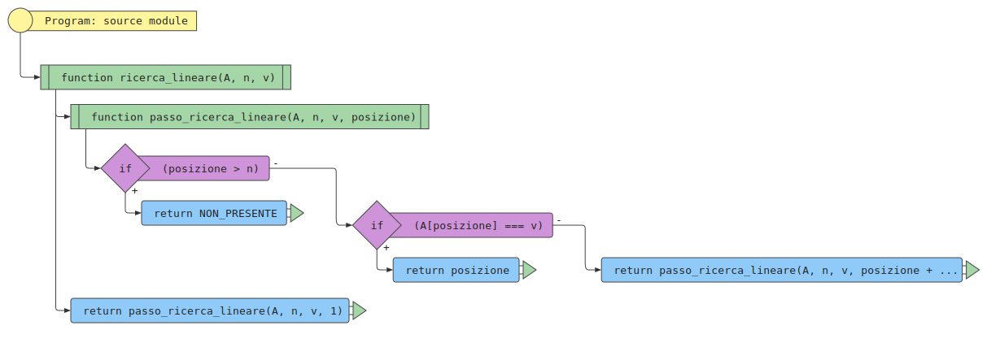

Determinare se un valore \( v \) dato è presente in una sequenza \( A \) di \( n \) valori. Se il valore \( v \) è presente, restituirne la posizione.
Una sequenza \( A \) di \( n \) valori, \( A = [a_1, a_2, \ldots, a_n] \) e un valore \( v \).
Un indice \( i \) tale che l’elemento in posizione \( i \)-esima della sequenza, \( a_i \) sia uguale a \( v \), oppure un valore speciale che indica che \( v \) non compare nella sequenza \( A \).
La sequenza \(A = [5, 1, 4, 2, 3] \) di \( n = 5 \) elementi e il valore \( v = 2 \)
L’indice \( i = 4 \) tale che \( a_4 \) è l’elemento \( 2 \).
L’algoritmo di ricerca lineare consiste nella scansione dei valori della
sequenza, partendo dal primo elemento e terminando o quando si incontra
il valore cercato o quando la sequenza termina. Usa NON_PRESENTE per indicare che
il valore non è presente nella sequenza.

Numero confronti: 1
Numero confronti: \( n \)
Numero confronti: \( \frac{1+2+3+\cdots+n}{n} = \frac{(1+n)\cdot n}{2 \cdot n} = \frac{1+n}{2} \)